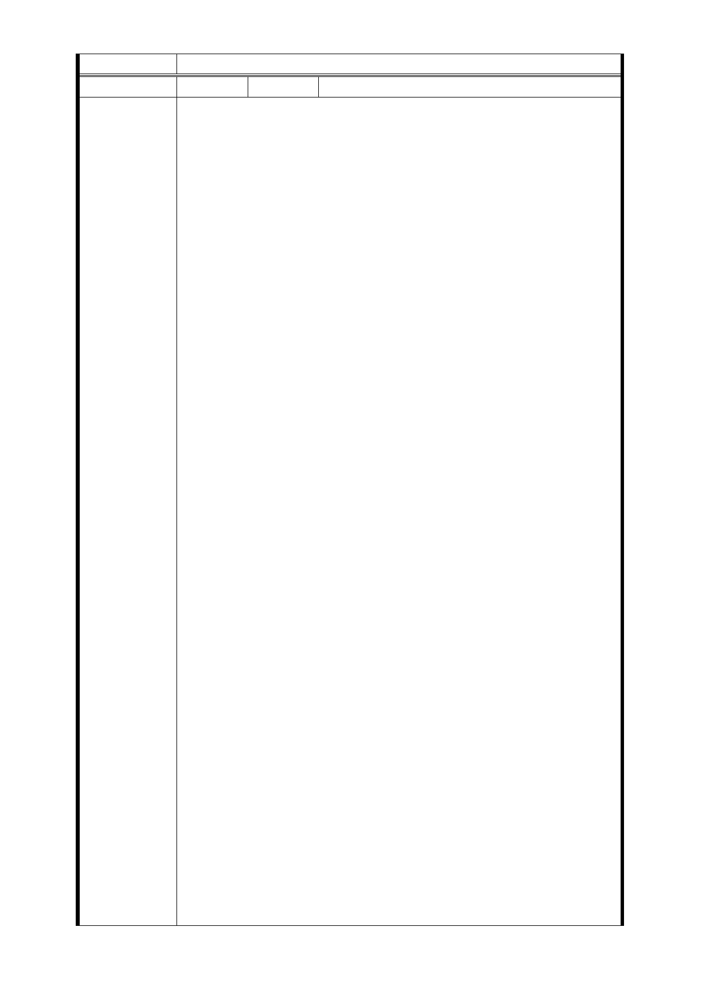

委員會決議 同編號交一－1 委員會決議。
編 號 捷五-31 陳情人 萬大華園社區管委會宋○彬主委
小民為台北市萬大路八十五巷「萬大華園」住戶，茲因萬大
線 LG03 站之車站出入口及聯合開發之部分之說明造成相關
居民恐慌，倘若依現行法令執行相關工程，恐將嚴重危及居
民相關權益，特向鈞府陳情，相關問題摘次如後。
一、附近的居民直到上個月底（民國 100 年 12 月底）才接獲
相關資料，甚有住戶才剛完成房子之整修及裝潢，有鑑於先
前相關訊息不透明，圈地之前，亦缺乏當地居民參與，且建
物圈地之標準不一，難以服眾，並未早日使相關居民周知，
致使居民權益受損，其行政作業部分是否有瑕疵，是否需藉
行政訴訟之管道或尋求相關行政救濟。
二、參考本月（十二月份）才剛出版之張金鶚的都市更新九
堂課一書第三十三頁，「都更成功的三要素為（ 1）高房價地
區，房價多在七十到八十萬元／坪間； （2）原建物少，且
多在一至兩層以下；（3）土地產權單純易整合，少違章戶，
本區根本未符合前兩條件，都更成功機率其實不佳」，何況依
出張金鶚的都市更新九堂課一書第三十四頁至「於台北市老
舊公寓更新專案，至二零一一年為止，尚未有成功的例子。
」
三、本次開發案名義上是捷運萬大線之開發，但實際上以
LG03 站之設計，所謂聯合開發之部分遠遠超過捷運設出入口
陳 情 理 由 所需之基地面積，此種掛捷運建設為名，而實際進行「都更
」之作為，考量都市更新對大眾帶來之長遠影響，若能仔細
評估，依上述張金鶚教授之論述，選擇高房價地區矮房地段
，並考量受波及地主之權益，或有可能成功，但若評估簡陋
，未考慮實際地方需求或人員進出量之多寡（參見附件一，
以在地的特性，住宅區為主，無重要市場或大型商圈，一小
時能有數千人搭捷運，實在悖離事實過多）或將場站附近圈
地之無限上綱，不符比例原則，咨意圈選地基不當，或在圈
地之前並未與實際居住於當地之居民充分溝通（極少數事前
表達願配合聯合開發之土地持份地主實際根本不居住於該地
，其心中僅重視買賣地價之高低，此與一般花半輩子努力在
此地區購屋實際自住之居民感受自然不可相提並論）而逕行
圈地進行都更，則則將造成居民權益受損並招致民怨。
四、計劃書中諸多與法律及理道矛盾之處，而圈定地基時或
因地方代表未說明實際情況，或因相關承辦人員未了解事實
情況，導致像萬大華園此等僅建二十餘年，有中庭，有公設
及十餘個停車位生活機能及屋況，其相較於新建大廈絕毫不
遜色之建物也在圈地範圍內，此一部分無論拆遷補助或是要
共同開發，若要兼顧受波及之居民生活衡擊縮小，勢必要增
加極高的土地建物收購成本或聯合開發時的成本，對於政府
希望的節省公帑不見得能有多大的助益，而若依目前的法律
- 72 -